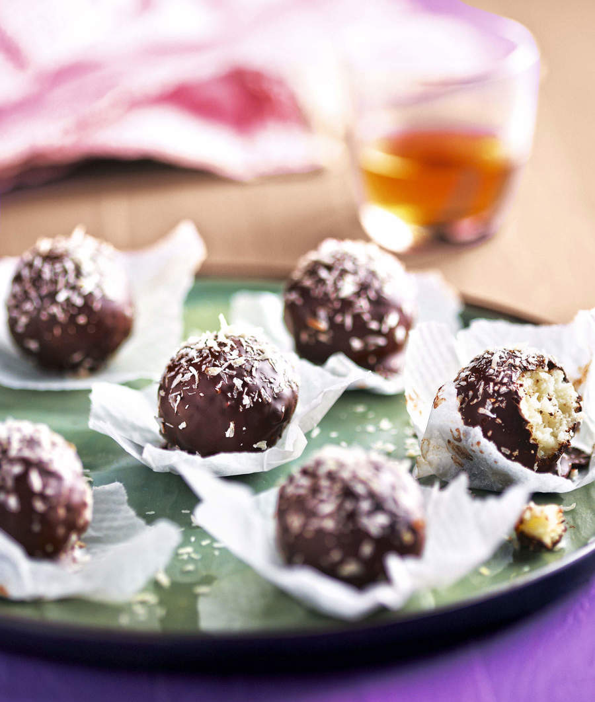
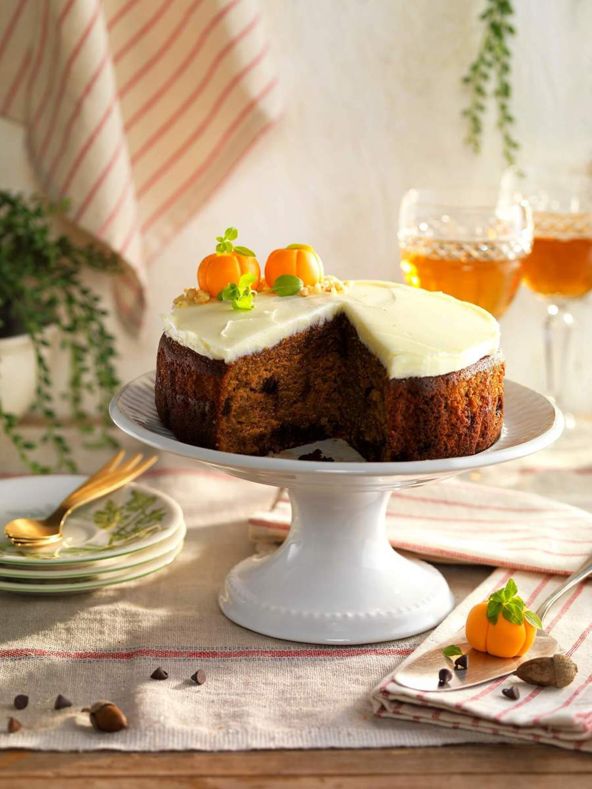

Recetas Navideñas

TRUFAS DE COCO Y CHOCOLATE
A veces no hace falta hacer un postre tan difícil para Navidad. Con estas
trufas de chocolate y coco, conquistarás a toda la mesa. Son muy sabrosas
y las podrás hacer el día anterior.
Ingredientes (para 15 unidades)
140 g de leche condensada
100 g de coco rallado + 2 cucharadas
150 g de chocolate fondant
preparacion
Paso 1. Calienta la leche condensada a fuego muy lento junto con
100 g coco rallado. Retira del fuego cuando la leche condensada
se vuelva líquida y deja enfriar. Tapa con film transparente y deja
reposar en la nevera durante un mínimo de 4 horas.
Paso 2. LRetira la preparación de la nevera y, con las manos, forma
pequeñas bolitas del tamaño de una nuez. Resérvalas de nuevo
en la nevera o en el congelador para que estén bien frías.
Paso 3. Mientras, prepara la cobertura. Corta en trozos pequeños
el chocolate, colócalo en una cazuelita y fúndelo al baño María.
Paso 4. Pincha las trufitas de leche condensada con un palillo o
una brocheta de madera y báñalas en el chocolate. Colócalas
sobre una rejilla para que escurran el exceso de chocolate.
Paso 5. Antes de que la cobertura de chocolate se seque y se
endurezca, espolvorea las trufas con coco rallado y déjalas enfriar
por completo. Sírvelas en capsulitas de papel rizado.
TUBITOS DE ENSALADA CON FRUTAS Y GAMBAS
Otro aperitivo que puedes preparar el día anterior son estos tubitos con frutas y
gambas. Coge nota y disfruta de esta exquisita forma de comenzar la Navidad.
Ingredientes (para 4 personas)
1 paquete de pasta filo
8 colas de gamba frescas
25 g de mantequilla
1 aguacate
1 lima
300 g de mango
300 g de piña fresca
35 g de piñones
80 g de canónigos
40 g de frambuesas liofilizadas, sésamo
1 manojo de hierbaluisa
Vinagre de arroz
Aceite de oliva
sal
Preparación
Paso 1. Forra con papel vegetal el exterior de unos moldes
cilíndricos de 4 cm de diámetro y 5 o 6 cm de altura.
Paso 2. Funde la mantequilla en una sartén antiadherente; deja
templar. Engrasa el papel con un poco de mantequilla y pincela
también las láminas de pasta filo.
Paso 3. Precalienta el horno a 180°. Extiende las láminas de pasta
y superponlas de 3 en 3. Luego, córtalas en tiras de 5-6 cm de
ancho.
Paso 4. Enróllalas en los moldes por la parte exterior y hornéalas
unos 5 minutos, hasta que estén doradas.
Paso 5. Corta la pulpa del aguacate en daditos y riégala con el
zumo de la lima. Pela el mango y la piña, y córtalos del mismo modo.
Paso 6. Mezcla estas tres frutas con los piñones, los canónigos
lavados y las frambuesas. Saltea las colas de gamba en una
sartén hasta que cambien de color y espolvoréalas con sésamo.
Paso 7. Desmolda los tubitos de filo y rellénalos con la ensalada
de frutas. Aliña con un hilo de aceite, vinagre de arroz y sal.
Decora las gambas ensartadas en brochetas y la hierbaluisa
lavada y sírvelos.

BIZCOCHO DE CALABAZA Y NUECES
Es un clásico en cualquier cumpleaños y también lo puedes hacer en
Navidad. Es un bizcocho de calabaza y nueces de lo más delicioso con una
buttercream casera muy sabrosa.
Ingredientes (para 10-12 personas)
250 g de azúcar moreno
120 g de aceite suave
160 g de harina
3 huevos
10 g de levadura
30 g de nueces
200 g de calabaza asada
½ cucharada de canela
Ingredientes Para la buttercream:
100 g de azúcar glas
100 g de mantequilla
1 cucharada de vainilla
Para decorar:
25 g de fondant blanco
Unas gotas de colorante
en gel naranja
Hojitas de aromáticas
Almendra en granillo
preparacion:
Paso 1. Precalienta el horno a 180°. Engrasa un molde de unos 20 cm
de diámetro y enharínalo ligeramente para que el bizcocho
no se pegue y sea más fácil desmoldarlo después./li>
Paso 2. Bate los huevos junto con el azúcar hasta que la crema
resultante doble su volumen. Incorpora el aceite y mezcla hasta que esté
totalmente integrado.
Paso 3. Tamiza la harina y la levadura e intégralas a la masa junto
con la canela. Añade la calabaza asada y las nueces, picadas.
Vierte la masa en el molde y hornea el bizcocho 40-45
minutos o hasta que al pincharlo con un palillo, este salga limpio.
Déjalo enfriar sobre una rejilla antes de desmoldarlo.
Paso 5. Prepara la buttercream batiendo el azúcar, la mantequilla
y la vainilla hasta conseguir una crema fina. Repártela por la superficie
del bizcocho.
Paso 6. Haz las calabazas. Mezcla el fondant con el colorante
y trabájalo con las manos hasta que se tiña. Haz bolitas, márcalas
con unas rayas verticales presionando con un palillo, y ponlas
sobre el bizcocho con las hojitas y el granillo de almendra.